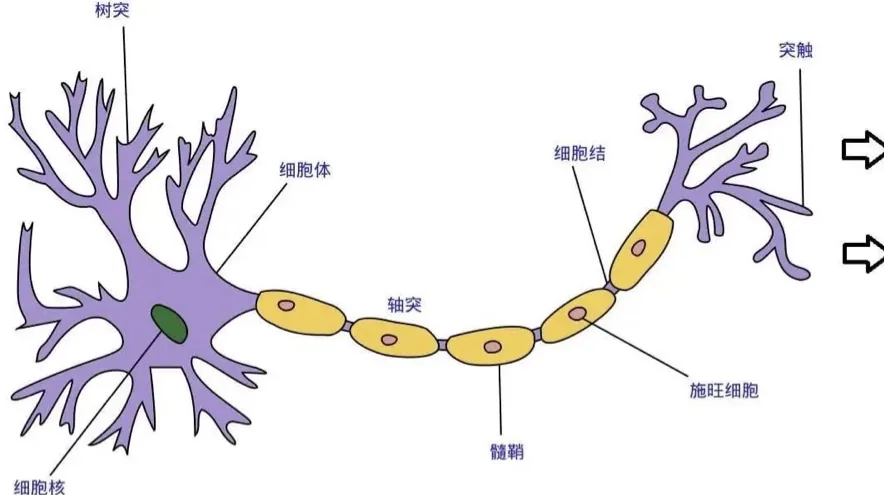
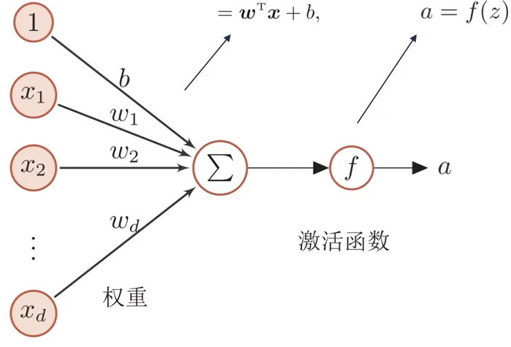
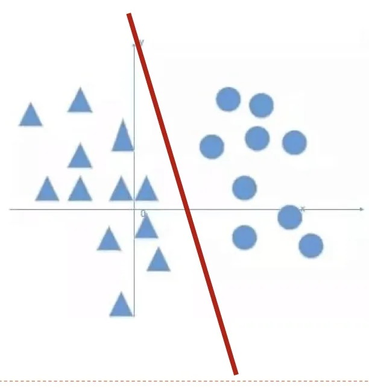
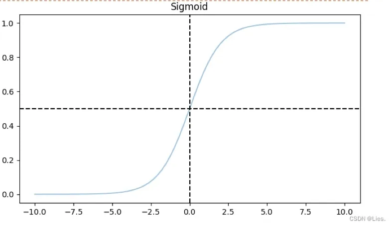
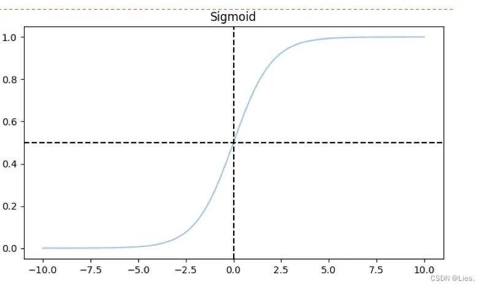
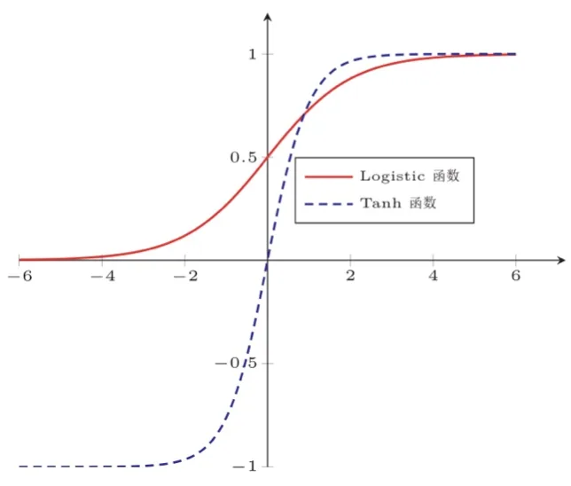
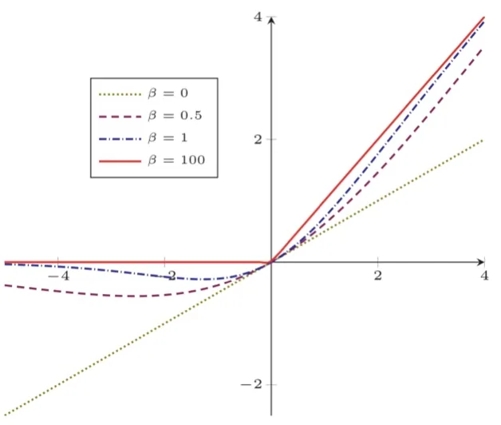
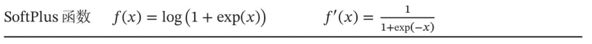

计算机视觉 · 第 5 章 前馈神经网络
5.1 人工神经元与激活函数
神经网络的最小单元是神经元。这一节先把生物神经元的工作方式抽象成一个数学式子，再说清楚式子里每一项——权重、偏置、激活函数——各自管什么，最后把常见的激活函数逐个过一遍，讲清它们各自的形状、优点和「杀死梯度」这类毛病。后面所有网络结构，说到底都只是把这些神经元按不同方式接起来。
1. 生物神经元
人工神经网络的出发点是人脑。一个生物神经元通常具有多个树突和一条轴突：树突用来接受信息，轴突用来发送信息。轴突尾端有许多末梢，可以与其他多个神经元的树突产生连接，这个连接部位称为突触，信息在突触上以电脉冲的形式传递。
单个神经细胞只有两种状态：兴奋和抑制。当神经元所获得的输入信号的积累超过某个阈值时，它就处于兴奋状态，产生电脉冲；否则处于抑制状态。这里的关键词是「积累」：一个神经元同时接收成百上千个输入，它把这些输入叠加起来，再拿总量去和阈值比较，而不是对某一个输入单独作判断。

2. 从生物神经元到人工神经元
把上面三件事——多个输入、加权积累、超过阈值才兴奋——翻译成数学语言，就得到了人工神经元。图 2 是课件给出的对应关系，逐条看：
- X₁, X₂, …, Xd 对应神经元 d 个树突接收到的信号，一起构成输入向量；
- ω₁X₁ 表示 X₁ 通过树突到达细胞体之后的信号，ω 是这条连接的权重，代表连接强度；
- d 个信号的加权和 Σ ωiXi 模拟输入信号的积累过程；
- a 对应神经元轴突的输出信号，它可以继续传输给其他神经元；
- 激活函数判断细胞积累是否超过某个阈值，模拟神经元的兴奋状态，产生电脉冲输出。
合起来，一个神经元的计算就是 a = f(Σi ωiXi + b)。输入经过加权求和、再加上偏置 b，最后由激活函数 f 决定输出多少。权重决定「每个输入有多重要」，偏置决定「这根神经元的门槛在哪里」，激活函数决定「门槛怎么卡」。
3. 为什么需要偏置 b
课件专门用两页提出并回答这个问题。如果没有偏置项，决策边界（W·X）就被限制在必须通过坐标原点，而现实问题并非都是能够经过原点线性可分的；这种限制会导致模型精度差，无法很好地拟合数据。

换个说法更容易理解：权重负责旋转这根决策边界的方向，偏置负责把它平移。只有权重没有偏置，这条线（或这个超平面）就被钉死在原点上，无论怎么训练都动不了位置。加上偏置以后，同一个权重对应的边界可以在空间中自由平移，模型才可能拟合那些「分界线不过原点」的数据。

4. 激活函数应当具备的性质
激活函数不是随便挑一个非线性函数就行。课件给出了四条要求，每一条都有明确的工程理由：
- 连续并可导（允许少数点上不可导）的非线性函数。非线性是根本：如果激活函数是线性的，多层网络叠起来仍然等价于一次线性变换，深度就白加了（这一点在 5.5 节会用一个具体例子算给大家看）；可导则是为了让梯度下降能算下去。
- 可导的激活函数可以直接利用数值优化的方法来学习网络参数。反向传播算的就是激活函数的导数，不可导就无从求梯度。
- 激活函数及其导函数要尽可能简单，有利于提高网络计算效率。激活函数在网络里要被调用亿万次，多一次指数运算就是实打实的开销。
- 导函数的值域要在一个合适的区间内，不能太大也不能太小，否则会影响训练的效率和稳定性。导数太小，误差在逐层反传时会衰减到 0（梯度消失）；导数太大，又会逐层放大（梯度爆炸）。
5. 常见激活函数
（1）Sigmoid 函数
Sigmoid 函数也叫 Logistic 函数，形式是 σ(x) = 1 / (1 + e−x)，导数有一个很漂亮的形式：σ′(x) = σ(x)(1 − σ(x))。它把整个实数轴压进 (0, 1) 区间，因此非常适合作为「输出是一个概率」的模型的最后一层。
优点：函数单调连续可微；输出值限定在 0 到 1 之间，相当于对每个神经元的输出做了归一化；可用于最终输出是概率值的模型，因为概率的取值范围也是 0 到 1。
缺点有三条：
- 非零中心化：输出恒大于 0，会使得其后一层的神经元的输入发生偏置偏移（bias shift），使梯度下降的收敛速度变慢；
- 计算复杂：求值涉及 ex；
- 梯度消失（这也是很多激活函数的通病）：输出接近 0 或 1 的神经元其梯度接近于 0，这些饱和神经元的权重不会再更新，而且与此类神经元相连接的神经元权重更新也会受影响。


（2）Tanh 函数
双曲正切函数 tanh(x) = (ex − e−x) / (ex + e−x)，可以看作放大并平移的 Sigmoid 函数：形状一样是 S 形，但输出范围从 (0, 1) 变成 (−1, 1)。
- 零中心化：输出关于原点对称，不会发生偏置偏移——这正是它相对 Sigmoid 的最大改进；
- 梯度消失：在 x 很大或很小时，函数同样饱和，也会「杀死」梯度。

（3）ReLU 函数
修正线性单元（Rectified Linear Unit，ReLU）是今天最常用的激活函数，形式极简：ReLU(x) = max(0, x)，正数原样通过，负数一律置零。它的两个好处是：
- 计算上更加高效：只有一次比较，没有指数运算；
- 只有 50% 的神经元处于激活状态，会使神经网络具有稀疏性，与生物神经网络的特性吻合（生物神经元也大多处于抑制状态）。
代价是死亡 ReLU 问题（Dying ReLU Problem）：某个神经元在所有的训练数据上都不能被激活（输入恒为负，输出恒为 0），那么这个神经元自身参数的梯度永远都会是 0，在以后的训练过程中永远不能被激活。解决方案是：在输入 x < 0 时保持一个很小的梯度，让它还有机会被救回来——Leaky ReLU、PReLU 等变体都是这个思路。
（4）Swish 函数
Swish 函数写成 swish(x) = x · σ(βx)，其中 σ(·) 为 Logistic 函数，β 为可学习的参数或一个固定超参数。它是一种自控门激活函数：当 σ(βx) 接近于 1 时，门处于「开」的状态，激活函数的输出近似于 x 本身；当 σ(βx) 接近于 0 时，门的状态为「关」，输出被压小。也就是说，负半轴不像 ReLU 那样被硬性截断，而是平滑地衰减，所以它同样能缓解死亡 ReLU 的问题。

（5）GELU 函数
高斯误差线性单元（Gaussian Error Linear Unit，GELU）把「门」换成高斯分布的累积分布函数：GELU(x) = x · P(X ≤ x)，其中 P(X ≤ x) 是高斯分布 N(μ, σ²) 的累积分布函数，μ、σ 为超参数，一般设 μ = 0、σ = 1 即可。由于高斯分布的累积分布函数本身就是 S 型函数，因此 GELU 可以用 Tanh 函数或 Logistic 函数来近似。它在 Transformer 一类模型里被广泛使用。
6. 常见激活函数及其导数
把上面几个函数和它们的导数放在一起对比（图 9），可以看出各自的取舍：Sigmoid、Tanh 形状相近但导数在两端迅速趋零；ReLU 的导数在正半轴恒为 1，因此不衰减，却在负半轴恒为 0；Swish、GELU 则用一条平滑的「门」把 ReLU 的硬拐点磨圆。

本节小结
- 生物神经元用树突接受、轴突发送，只有兴奋与抑制两种状态，输入积累超过阈值才发放脉冲；人工神经元把这三件事抽象为「加权求和 → 加偏置 → 过激活函数」；
- 偏置 b 的作用是让决策边界可以平移；没有它，边界被限制为必须过原点，模型精度会明显变差；
- 激活函数要满足四条：非线性且（几乎处处）可导、可导才能用数值优化、函数与导数尽量简单、导数值域要适中（太大梯度爆炸、太小梯度消失）；
- Sigmoid 输出 (0, 1)，适合概率输出，但非零中心化、计算复杂、两端饱和；Tanh 是它的零中心化版本，仍有梯度消失；
- ReLU 计算高效、带来稀疏性，但有死亡 ReLU 问题；Swish 用可学习的「门」平滑地压小负半轴；GELU 用高斯累积分布函数做门，常用 Tanh 或 Logistic 近似；
- 激活函数的选择没有绝对最优：本质是在「计算代价」「是否零中心化」「梯度是否容易消失」三者之间取舍。